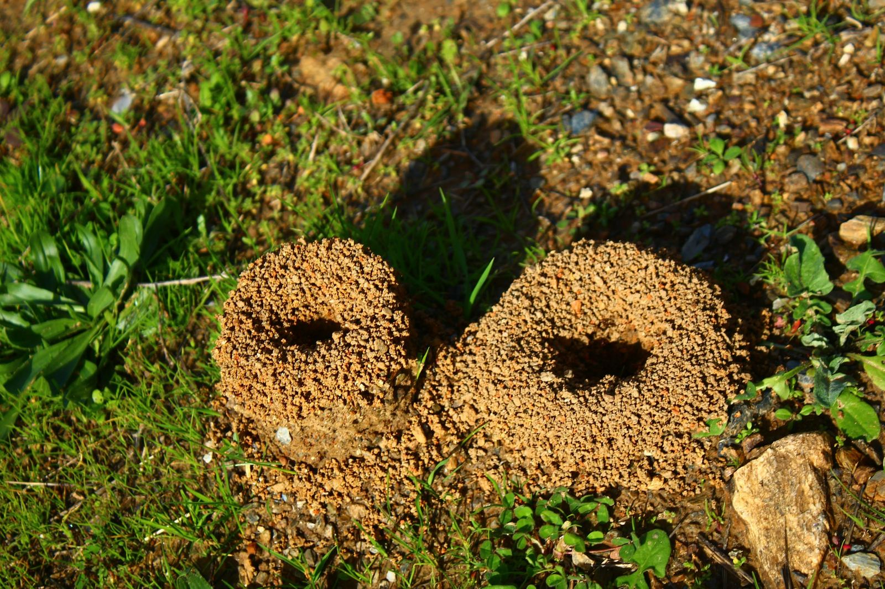

L'idée centrale de la myrmécologie moderne tient en une inversion de perspective. On a longtemps regardé une fourmilière comme une société : des individus, des rôles, une organisation. Bert Hölldobler et Edward O. Wilson proposent, dans The Superorganism (2008), de la regarder comme un organisme : une entité unique dont chaque caste remplit une fonction physiologique.
La comparaison tient jusque dans le détail : les ouvrières se transmettent la nourriture de bouche à bouche (la trophallaxie) et forment ainsi l'équivalent d'un système circulatoire. Les soldats interviennent sur les agressions extérieures : un système immunitaire. Le couvain, lui, est l'appareil reproducteur.
Douglas Hofstadter poussait l'image jusqu'au bout avec « Tante Fourmi », une fourmilière consciente où chaque fourmi, individuellement idiote, fonctionne comme un neurone.
La colonie réagit comme un corps
Des expériences confirment cette lecture. Soumise à une simulation de prédation, une colonie réagit de manière coordonnée et différenciée selon l'endroit touché : les éclaireuses se replient en périphérie, les ouvrières du centre fuient. Exactement comme un corps réagit à une douleur localisée plutôt qu'à une douleur générale.
Plus troublant : les colonies ont une personnalité. Chez les fourmis Azteca, qui vivent dans les arbres Cecropia, les chercheurs observent des profils comportementaux stables dans le temps : certaines colonies agressives, d'autres placides. Et ce trait est corrélé à la santé de l'arbre-hôte qu'elles protègent. Il s'agit d'un tempérament collectif, pas de l'humeur d'une fourmi.
Les castes sont des organes
Le meilleur indice que la colonie est un corps, c'est la manière dont l'espérance de vie se distribue. Elle ne dépend pas de la chance ou de la santé, mais strictement de la fonction.
- La reine, jusqu'à 30 ans. Elle s'accouple une seule fois, lors du vol nuptial, stocke le sperme, et pond jusqu'à sa mort. Elle choisit même le sexe de sa descendance : un œuf fécondé donne une femelle, un œuf non fécondé un mâle.
- L'ouvrière, environ 3 ans. Fourrage, entretien des galeries, soin au couvain. Elle est l'organe polyvalent.
- Le soldat, variable. Mandibules surdimensionnées, tête parfois carrée servant littéralement de bouchon à l'entrée du nid.
- Le mâle, quelques semaines. Il féconde, puis meurt. Sa durée de vie est calibrée sur son unique usage.
Trente ans, trois ans, trois semaines. Ces écarts sont des durées d'amortissement, pas des accidents biologiques. Les fourmis meurent et se régénèrent selon les besoins du superorganisme, comme les cellules d'un tissu.
Des biologistes ont d'ailleurs construit un modèle mathématique de « cycle de vie du superorganisme », prédisant la survie, la croissance et la reproduction d'une colonie à partir du métabolisme individuel de ses ouvrières, en la traitant littéralement comme un organisme doté de ses propres constantes physiologiques.
L'immunité sociale
Une colonie possède une défense collective contre les maladies, distincte de l'immunité de chaque fourmi. Le principe est déconcertant de simplicité : des règles individuelles combinant le niveau de menace perçu et un retour social font que les membres les plus infectieux reçoivent le plus de soins tout en participant le moins aux soins des autres. Personne ne pilote : le tri hygiénique émerge.
Il existe même une forme de vaccination sociale. Le contact avec des ouvrières exposées expérimentalement à un champignon parasite confère un bénéfice de survie à leurs congénères naïves lors d'une exposition ultérieure au même parasite.
Le corps individuel délègue
Chez une espèce étudiée, l'immunité individuelle reste active contre les infections bactériennes (que l'immunité sociale ne couvre pas), mais ne se déclenche plus face aux infections fongiques, prises en charge par le collectif. Comme si le corps de la fourmi avait sous-traité une partie de sa défense à l'échelon supérieur.
Certaines colonies vont jusqu'à fabriquer leurs propres antimicrobiens et à se les appliquer mutuellement : une pharmacie interne à l'échelle du groupe.
Un corps qui s'assemble et se dissout
Les fourmis légionnaires du genre Eciton franchissent les brèches du sol en construisant des ponts avec leur propre corps. Face à un vide, elles s'étirent en travers, s'accrochent les unes aux autres, et laissent leurs congénères traverser pendant que la structure se construit.
Le plus impressionnant est l'ajustement : ces ponts se réorganisent dynamiquement selon la taille de l'écart à franchir. Chaque fourmi décide de rejoindre ou de quitter la structure en fonction d'un écart perçu localement, sans qu'aucune ne connaisse la largeur réelle du vide, ni le volume de trafic global.
C'est un tissu vivant temporaire : des individus qui renoncent à leur autonomie de mouvement pour former, le temps d'un franchissement, un organe collectif.
Un appareil digestif externalisé
Les fourmis champignonnistes, les coupe-feuille du genre Atta, ne mangent pas les feuilles qu'elles découpent. Elles les compostent pour cultiver un champignon, co-évolué avec elles depuis environ cinquante millions d'années, et désormais incapable de vivre sans elles.
La raison du détour est simple : une fourmi ne digère pas la cellulose, le champignon si. Ce que mangent les fourmis, c'est donc lui — plus précisément les gongylidies, des excroissances gorgées de nutriments qu'il produit au bout de ses filaments. Les larves n'ont presque rien d'autre.
Ce jardin fongique fonctionne comme le système digestif externe de la colonie. Il est défendu par une chimie sophistiquée : des bactéries productrices d'antibiotiques, du genre Streptomyces, aident les fourmis à protéger la culture contre un champignon pathogène, Escovopsis.
Le superorganisme déborde de son espèce
Ici, l'entité biologique n'est plus « la colonie ». C'est un réseau à trois partenaires (fourmis, champignon cultivé, bactéries symbiotiques) qui ne fonctionne qu'ensemble. Le superorganisme n'intègre pas seulement ses propres cellules : il annexe d'autres espèces comme des organes.
La dépendance va d'ailleurs dans les deux sens. Une jeune reine qui part fonder sa colonie emporte, dans une poche de sa bouche, un fragment du champignon maternel. La culture ne se propage pas autrement : elle voyage de génération en génération avec les reines, comme un organe transmis avec l'organisme.
Une architecture que personne n'a dessinée
Chez les insectes sociaux, tous les mécanismes de thermorégulation sont auto-organisés : ils découlent de règles simples suivies par chaque ouvrière individuellement. Deux stratégies dominent : déplacer le couvain le long des gradients thermiques, ou stabiliser la température par l'architecture du nid elle-même.
Une termitière, et de façon analogue certains nids de fourmis, est bâtie par des dizaines de milliers d'ouvrières dont aucune n'a la moindre perception de la forme globale du monticule, ni de ses tunnels de ventilation pourtant savamment orientés. L'objectif n'existe nulle part. Seul le résultat existe.

Naissance, croissance, quasi-immortalité
Le cycle commence par le vol nuptial : la jeune reine s'accouple, part fonder son nid, et élève sa première génération d'ouvrières en puisant dans ses propres réserves corporelles, y compris en résorbant ses muscles alaires, devenus inutiles.
Chez les espèces à reines multiples, la colonie devient quasiment immortelle : elle ne dépend plus de la survie d'un seul individu. Le prix à payer est une consanguinité croissante et une perte d'adaptabilité. Un corps qui ne meurt plus, mais qui cesse aussi d'évoluer.
Aucune des fourmis d'aujourd'hui n'était là
Une ouvrière vit trois ans, une colonie en vit trente. Le corps qui creuse, défend et nourrit aujourd'hui n'a plus une seule des cellules qui le composaient il y a dix ans. C'est pourtant la même colonie, au même endroit, avec les mêmes galeries et la même odeur.
Sources et pistes
- Bert Hölldobler & Edward O. Wilson, The Superorganism, W. W. Norton, 2008.
- Douglas Hofstadter, Gödel, Escher, Bach, 1979 — le dialogue de « Tante Fourmi ».
- Travaux sur la personnalité collective chez Azteca et les arbres Cecropia.
- Recherches sur l'immunité sociale et la vaccination sociale chez les fourmis (Nature Communications).
- Travaux de Princeton sur les ponts auto-assemblés d'Eciton.
- Recherches sur la symbiose Atta / champignon / Streptomyces.